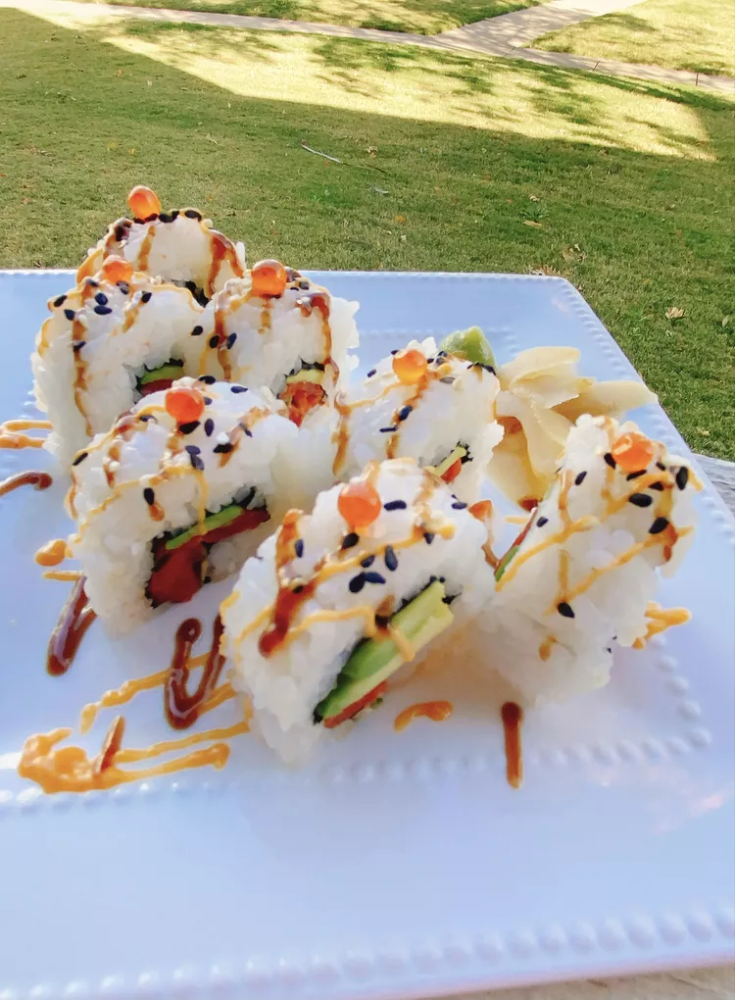

Spicy Salmon Maki

thedailygourmet's recipe for a simple, tasty and spicy salmon Maki. Works with frozen, fresh or cold smoked
salmon and provides about five rolls.
Ingredients
- 1 cup glutinous white rice (sushi rice)
- 1 ½ cups water
- ¼ cup rice wine vinegar
- 2 tablespoons white sugar
- ½ teaspoon salt
- 1 (1 ounce) package nori (dry seaweed)
- 1 medium avocado, thinly sliced
- 1 (8 ounce) farmed Atlantic salmon
- 3 stalks green onions, halved lengthwise
- ¼ cup sriracha mayonnaise (Kikkoman)
- 2 tablespoons hoisin sauce
- 2 teaspoons black sesame seeds
- 2 teaspoons toasted sesame seeds
- ½ teaspoon wasabi paste, or to taste
- 1 tablespoon pickled ginger, or to taste
Steps
- Rinse rice in a strainer under cold running water until water runs clear. Combine rice and water in a
saucepan. Bring to a boil over medium-high heat, reduce heat to low, cover, and cook for 20 minutes. Remove
from heat.
- Meanwhile, combine rice wine vinegar, sugar, and salt in a small saucepan. Cook over medium heat until sugar
dissolves. Remove and allow to cool. Stir vinegar mixture into the cooked rice - rice will dry as it cools.
Allow rice to cool completely, about 30 minutes.
- Place a sheet of nori onto a sushi mat. Place about 1/2 cup rice on top and, using a rice paddle, spread
rice onto the nori sheet.
-
Flip nori over so rice is facing down. Arrange 3 to 4 avocado slices, about 2 ounces salmon, 1 strip green
onion, and 2 teaspoons Sriracha mayonnaise down the middle of the nori sheet.
-
Carefully, but tightly, roll nori up by closing in on the ingredients to form a roll. Drizzle each roll with
hoisin sauce and more Sriracha mayonnaise and sprinkle with both types of sesame seeds.
- Slice each sushi roll into 8 pieces. Serve with a dollop of wasabi and pickled ginger on the side.
Source: allrecipes